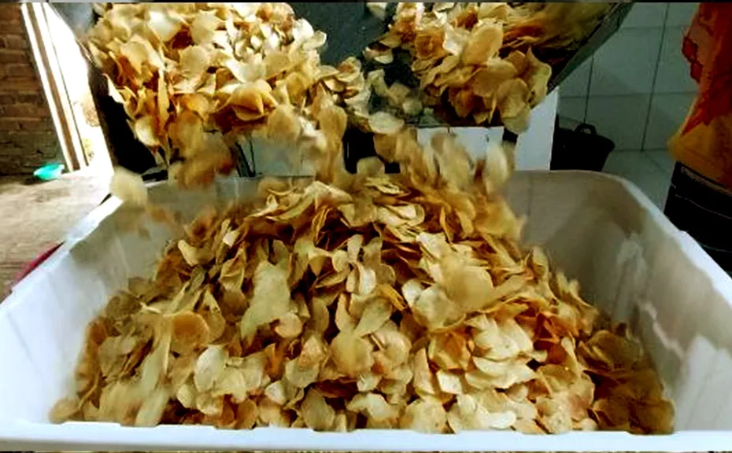

Nasi bumbung adalah salah satu makanan khas yang berasal dari Desa Kebonsari. Mulai dibuat pada tahun 2018 oleh Ibu Sarwik, makanan ini memiliki cerita asal usul yang menarik. Desa Kebonsari memiliki Balkondes dan ingin menciptakan sebuah menu khas yang berbeda dengan makanan lainnya. Dikenal sebagai desa yang terkenal dengan kerajinan bambu, akhirnya muncul ide untuk menciptakan nasi bumbung. Nasi ini dikemas dengan cara dibuntel menggunakan daun dan diletakkan dalam bambu yang telah dibelah dan diikat dengan menggunakan bahan bambu pula. Penggunaan bambu yang dibelah tersebut bertujuan untuk mencegah nasi menjadi ambyar atau sulit diambil.
Nasi bumbung bisa disajikan dalam dua bentuk, yaitu dibakar atau nasi biasa, dan disajikan dengan ayam bakar serta berbagai lauk-pauk seperti tempe, tahu, lalapan, dan sambal. Ini adalah kreasi khas dari Ibu Sarwik, seorang warga dari Dusun Gupit, Desa Kebonsari, yang berhasil menciptakan resep olahan nasi bumbung ini.
Lantari
Lantari, yang sering dikenal sebagai kembang goyang, merupakan camilan manis khas Jawa. Nama "kembang goyang" diberikan karena bentuknya menyerupai kelopak bunga dan proses pembuatannya dengan cara digoyangkan hingga terlepas dari cetakannya saat digoreng dalam minyak panas. Camilan ini diproduksi oleh Bapak Marodan (60 tahun) yang merupakan warga dari Dusun Kebonwage. Seiring berkembangnya inovasi, lantari kini hadir dalam berbagai varian warna, seperti kuning dan ungu. Meskipun warnanya beragam, rasanya tetap sama. Lantari dibuat dari bahan dasar tepung beras dan tepung ketan yang dimasak menggunakan luweng untuk mencapai tingkat kematangan yang sesuai.
Mie Rebung
Di Desa Kebonsari, rebung jarang diolah menjadi makanan, kecuali untuk satu olahan khusus, yaitu Mie Rebung. Mie Rebung ini merupakan kreasi dari Ibu Tutik, seorang warga Dusun Gunung Mijil. Sesuai dengan namanya, olahan ini berbentuk seperti mie, dengan rebung yang diiris tipis-tipis dan panjang, menyerupai mie, sehingga dapat dimasak sesuai selera. Untuk membuat Mie Rebung ini, biasanya digunakan jenis bambu jawa atau apus dengan ukuran sekitar 1-1,5 jengkal tangan orang dewasa.
Kripik Singkong

Di Dusun Kebonwage, keripik singkong dan kimpul diproduksi secara luas oleh Bapak Andri, seorang warga asli Kebonwage yang berusia 40 tahun dan bergerak dalam bidang usaha tersebut. Saat ini, Bapak Andri telah memiliki sekitar 20 karyawan yang terlibat dalam berbagai tahapan proses produksi. Bahan baku untuk keripik biasanya diperoleh dari wilayah Dieng, Wonosobo. Dalam satu kali pemesanan, jumlahnya bisa mencapai 3,5 kwintal untuk produksi keripik singkong dan kimpul, dengan waktu produksi selama 4-5 hari.
Proses penggorengan 4 kwintal keripik memerlukan sekitar 2 jerigen minyak. Setelah proses produksi selesai, keripik dikemas dan dikirim ke berbagai wilayah, termasuk Semarang dan bahkan hingga ke Jepang. Namun, perlu dicatat bahwa keripik singkong hanya dikirimkan di dalam negeri saja, sementara untuk kimpul dapat diekspor juga.
Gendhis Jawi
Gendhis Jawi, sebuah produk gula jawa khas dari Desa Kebonsari, diproduksi oleh Bapak Askin, seorang petani pengolah gendhis jawi yang bermukim di Dusun Pule. Gula jawa yang telah selesai diproses ini umumnya dijual ke berbagai warung. Bahan utama yang digunakan untuk pembuatan gendhis jawi adalah nira kelapa yang telah dideres. Proses pengolahan dilakukan dengan menggunakan wajan yang dipanaskan di atas luweng, dan kemudian dicetak hingga menjadi bentuk gendhis jawi atau gula jawa.